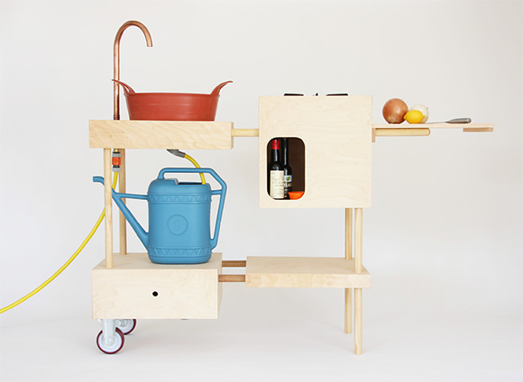

kitchens revision 2395

Challenges
Cooking requires a variety of tools suitable for a wide range of temperatures and environments.
Approaches
Each cooking tool which can be reused for more than one purpose reduces the total needed and simplifies reproduction.
Tools
Parts
Mason jars
- Wide-Mouth Mason Jar Silicone Lids and Corks (2 Lids & 2 Corks)
- Ball Wide Mouth Pint and Half Glass Mason Jars with Lids and Bands, 24-Ounces, 9-Count
- Silicone Mason Jar Protector Sleeve (2 Pack) | Fits Ball, Kerr 24oz (1.5 pint) Wide-Mouth Jars